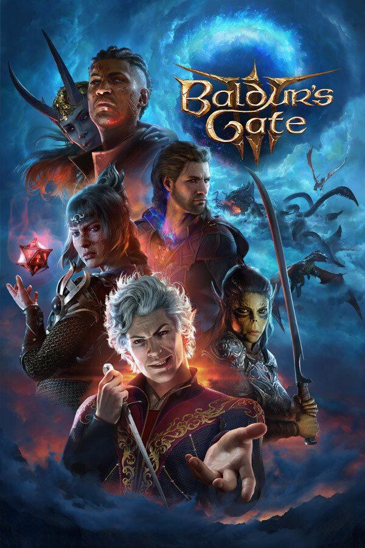

19.8Moosey rates
Seduce a vampire, interrogate a squirrel, beat a boss by shoving him off a ledge. Two hundred hours in and still finding things. The peak.
M.Games
9.8
Baldur's Gate 3
Larian Studios · 2023